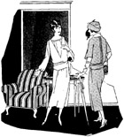
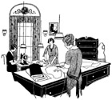
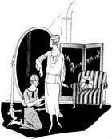

1926—The New-Way Course in Fashionable Clothes-Making
Lesson 51—Reception Room
The Reception Room
We have discussed the dress shop as a whole. Now let us take up each room individually and see just how it should be furnished. We are pretending, of course, that you are planning to open a shop of this kind. Whether you do or not, it will be helpful to you to read this lesson and keep the suggestions in mind.
The size of your reception or sales room depends upon the size of your shop. It is the very first room the customer enters and should be the most attractive. It is the room, also, that holds the greater part of your stock. As mentioned before, there should be a table, chairs, a rug, a small desk, cash register and telephone, show cases and something decorative—either a cage with a canary in it singing a welcome to the customer or an odd vase containing fresh-cut flowers. It is a wise plan, also to have a coat rack near the door so that the customers do not have to hold their wraps. Windows in the room should be curtained to match the coverings on the chairs and table. In fact, there should be one harmonious color scheme throughout—and a color scheme that is flattering to most people as the effect of the dress displayed against the background of the shop often determines the sale.
If your reception room is large, you may have one or two pretty wax figures on display, showing your newest and smartest creations. These wax figures can be purchased inexpensively and can be used both in the shop and in the display window that faces the street. They are splendid for display.
On the other hand, if your reception room isn't a reception room at all but just a room in your home, it may be very simply furnished. You may use your own good taste and judgment in this matter. We want to caution you, though, against having this room littered with ends of materials, patterns and half-finished dresses. This always gives a poor impression to the new customer who prefers seeing a neat, well-kept room. She does not like to feel that her materials and dresses will be left lying around.
In your home, one room may be made to serve the purpose of work room, sales room and fitting room. But in a shop, no matter how small, you will have to have a separate room in which to do the actual making of the garments which you sell. This holds true whether you make the dresses yourself or employ other dressmakers to make them.
If there is a separate fitting room, it should connect with or be conveniently near the work room.
The work room should be light, airy and comfortable and should be free from all waste materials and cumbersome furnishings. Pleasant surroundings inspire pleasure in one's work. It is a mistake to place dressmakers in a dingy, unattractive room as they will be unable to give you the best that is in them. Give your work room as much attention as your reception room.
One of the most important things in your workroom is the cutting table. It should be about 4 feet wide and 9 or 10 feet long. The bottom of the table should be fitted with drawers to hold equipment such as patterns, trimmings, findings, etc. the cutting shears should be attached to the end of the table with a long piece of tape, so that the workers do not have to search for it when they want it. Or it may be hung on the wall on a hook.
You will need three ironing boards—one large one for skirts and large garments, a medium size one and a small one for pressing lace, ribbons, ruffles, etc. The boards should be well padded and kept covered with clean cambric. You will also need three sizes of irons to correspond with the three sizes of boards.
Every well-equipped workroom contains one or more dress forms, a wardrobe or closet, a sewing machine for every two or three workers, and comfortable chair for every worker. A chest of drawers is a great convenience. Each drawer should be labeled so that the contents can be known instantly, without searching through them. One small drawer may be used for shears and scissors, thimbles, tape measures, rules, emery bags, needles, pins, etc. Another may be used for patterns, cambric, muslin, cordings, beltings, etc.
Other conveniences, such as motor-driven sewing machines, a desk for making up accounts and keeping records, waste baskets for waste materials, scrap bags, etc. may be bought as the business progresses and can be made to pay for themselves. There should be a place near the workroom where the workers can wash their hands so as to prevent the materials from becoming soiled.
If you have workers to help you provide them with every comfort possible. They will appreciate small boxes covered with cretonne for footstools; cold drinks in warm weather; carefully shaded lights for the evening hours; attractive, inspirational pictures on the walls. There should be curtains in the workroom and the floor should be covered with linoleum as lint and scraps of materials adhere to a rug.
The Fitting Room
It is not enough to make the sale. The customer must be pleased after the sale as well as before. The sale is just the beginning—it is the constant custom that counts. Therefore, it is of utmost importance that the fitting room be comfortable, convenient and attractive.
It should connect with the reception room and work room. It should not be a tiny room, but one large enough for the fitter to do her work comfortably. It should contain large mirrors, arranged in such manner that every part of the garment can be seen without difficulty.
If the reception room and fitting room have no door between them, as is often the case, an attractive screen may be used. It adds greatly to the appearance of the shop if the screen is odd, distinctive. Or a curtain to match the other curtains may be used.
The well-equipped fitting room contains small pockets in the wall for pins, tape measures, etc. It is a sign of poor management and inefficiency to leave the customer every two minutes to run into the next room for pins, or chalk, or a ruler. Everything should have a place, and everything should be in its place.
There should be no furnishings in the fitting room, however, that are not absolutely essential—as this room is usually small and every inch of space is needed. The customer should not be kept waiting. Courtesy is more important after the sale than before, otherwise the customer will gain the impression that it was her money only wanted—and she will not return. Give her the impression that you are interested in her, that you want to serve her, and she will never go to any dress shop but yours!